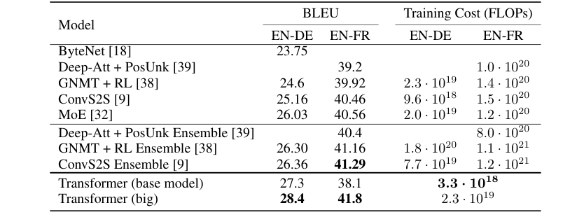

The paper credited with starting the LLM era never trained a language model
Vaswani et al.'s 2017 paper reported BLEU translation scores on two language pairs and never once trained the kind of model it is now credited with inventing.
Why this matters
"Attention Is All You Need" is probably the most cited document in AI right now, invoked constantly as the paper that produced ChatGPT and everything since. Most of the people invoking it have not opened it. Its own tables reported a translation score on two 2017 language pairs, not a next-word-prediction test of the kind every large language model trains on now. Its own text still disagrees with itself on the one number most people quote. Strip away the reputation and a narrower, stranger document remains: a specific benchmark, a specific training bill, and a specific gap between what the paper built and what it is credited with building.
- 01
- An attention head is a weighted average that computes its own weights: how one attention head turns comparisons between words into the weights this paper's two stacks are built from.
Eight authors, two language pairs, one new architecture
"Attention Is All You Need" is a 2017 paper by eight researchers then at Google Brain, Google Research, and the University of Toronto.1 Its eight authors are Ashish Vaswani, Noam Shazeer, Niki Parmar, Jakob Uszkoreit, Llion Jones, Aidan Gomez, Łukasz Kaiser, and Illia Polosukhin. Its own author footnote calls the listing order random and every contribution equal. It then names who proposed what: Uszkoreit replacing the model's recurrent layers with self-attention, Shazeer designing the scaled dot-product and multi-head attention that made the replacement work.1
The paper reported one kind of experimental result: machine translation. Its new architecture, the Transformer, was trained and scored on two language pairs from WMT 2014, a shared translation task organized by an independent group of academic linguists, not by Google or Toronto.2 The English-to-German pair drew about 4.5 million training sentence pairs; the English-to-French pair drew 36 million.1 A third, smaller test applied the same architecture to English constituency parsing, the task of diagramming a sentence's grammatical structure, trained on the Wall Street Journal portion of the Penn Treebank.1
The Transformer's central move was to drop the recurrent and convolutional layers translation models had used for years and let attention alone connect every word in a sentence to every other word in a single step. How one attention head turns that connection into a number is its own subject, already taught in the mechanics of an attention head. What matters here is the shape the paper built: two attention-based stacks, an encoder that reads the source sentence and a decoder that writes the translation, joined together. That two-stack shape returns later, when a decoder working alone becomes the entire model.
None of that is how the paper gets discussed today. A 2023 profile from Vaswani's alma mater quotes him saying "there is going to be a time before Chat-GPT and a time after Chat-GPT," and quotes a USC researcher calling the architecture's staying power a sign it "tapped into something fundamental."3
The 41.8 score the paper's own text calls 41.0
Table 2 is the paper's scoreboard, measured in BLEU, a 0-to-100 score for how closely a machine's translation matches a human reference. On WMT 2014 English-to-German, the Transformer scored 27.3 BLEU in its smaller "base" configuration and 28.4 in its larger "big" one. The paper's abstract calls that an improvement "over the existing best results, including ensembles, by over 2 BLEU."1 The prior best, an ensemble of the GNMT and ConvS2S architectures, scored 26.30 and 26.36.1 On WMT 2014 English-to-French, the base model scored 38.1.1

The big model's French score is where the paper disagrees with itself. Its abstract and Table 2 both report 41.8 BLEU.1 Section 6.1, one page later, describes the identical result as "a BLEU score of 41.0."1 The peer-reviewed version of the paper, published in the NeurIPS 2017 proceedings, is consistent throughout: 41.0 in its abstract, its table, and its prose.4 The likeliest explanation is that the authors raised their own headline number sometime after the NeurIPS camera-ready text was locked, updated the arXiv abstract and table, and never returned to fix the sentence in Section 6.1. That sentence still reads 41.0 in the version posted today, six years later, and no public correction accounts for the gap.
The paper's other well-known line is about cost, not accuracy, and it names two different training runs. The big model, the one that scored 28.4 and 41.x, took 3.5 days to train on eight Nvidia P100 GPUs.1 A separate line in the introduction claims the architecture "can reach a new state of the art in translation quality after being trained for as little as twelve hours on eight P100 GPUs."1 That sentence describes the smaller base model, whose French score is 38.1, not 41.x. The two claims measure two different models. A retelling that keeps the twelve hours and attaches the bigger model's score to it is combining numbers the paper itself never combined. By the paper's own accounting, the big model's training run used about 2.3×10¹⁹ floating-point operations, roughly a fifth of the 1.2×10²⁰ the strongest prior single model needed.1
The paper's one other experiment, the parsing side-test on the Wall Street Journal, is easy to miss. Trained on roughly 40,000 sentences, the Transformer reached an F1 score of 91.3, short of the 91.7 the best specialized parser of the time reached on the same data.1 Trained instead on a larger, 17-million-sentence corpus built for the purpose, it reached 92.7, ahead of the 92.1 prior best.1 Translation and parsing: that is the complete list of tasks this paper's results sections cover.
Five mentions of "language model," zero about this one
The phrase "language model" appears five times in the paper.1 Every one of them describes something else: earlier work that combined attention with a recurrent network, cited in the introduction or the background section, or a paper listed in the bibliography. None describes an experiment the Transformer itself ran. The paper never trained on a next-word prediction task, never reported a perplexity score, and never claimed to generate open-ended text.
This is not only casual imprecision by people who never opened the paper. Careful outside reporting has repeated a softer version of the same error. A 2022 Quanta Magazine retrospective on the architecture's spread describes it as "originally designed to handle language" in a general sense.5 The paper does not support that framing on its own terms. What it was designed and shown to do was translate between two specific language pairs and, in one side test, parse sentence structure. Language in general was never the task; translation and parsing were the tasks, and they are not the same claim.
The kind of model most people mean when they credit this paper with starting the current era, one trained to predict the next word across open-ended text, is a different, later invention. It keeps only half of the architecture this paper described.
GPT kept the decoder. It dropped the other half.
The encoder-decoder shape from the first section is where the actual language-model lineage splits off, and it splits in two steps, not one. OpenAI's 2018 paper introducing GPT-1 states plainly: "we use a multi-layer Transformer decoder for the language model, which is a variant of the transformer."6 Its citation for "the transformer" is Vaswani et al., the 2017 paper.6 Its citation for the specific decoder-only design, the version with no encoder half at all, is a different paper: Liu et al.'s 2018 "Generating Wikipedia by Summarizing Long Sequences."7
Liu et al. was published months before GPT-1 and shares two authors with the original Transformer paper, Łukasz Kaiser and Noam Shazeer.7 So the decoder-only design GPT's whole lineage runs on was not GPT-1's own invention. GPT-1 adopted it from a paper written earlier the same year, by two researchers who had also helped write the paper it is now credited with superseding. GPT-1 named one more departure of its own: it replaced the original's fixed, sinusoidal position signal with one the model learns during training.6 And its training objective is the one the 2017 paper never ran: next-word prediction. GPT-1 pretrained on more than 7,000 unpublished books, reaching a perplexity score of 18.4 on that text before any translation-style task entered the picture.6
The takeaway
The paper measured translation: 28.4 BLEU on English-to-German, and on English-to-French either 41.8 or 41.0 depending which line of its own text you read. Both scores were measured against WMT 2014's independently curated test sets, and one side-test covered parsing sentence structure. It cost 3.5 days on eight P100 GPUs for the model that scored those numbers, not the twelve hours often quoted alongside them, which belongs to a smaller model with a materially lower score. The invention people mean when they credit this paper with starting the current era, a model trained to predict the next word across open-ended text, is not something this paper built. That invention runs on half its architecture, the decoder alone. GPT-1 built it, training that decoder on next-word prediction, the objective this paper never ran. The decoder design itself came from a different paper, written months earlier by two of this paper's own authors, built for summarizing Wikipedia articles.
- 01
- Improving Language Understanding by Generative Pre-Training: OpenAI's 2018 paper, the one that actually built a decoder-only language model on top of this architecture.
- 02
- Will Transformers Take Over Artificial Intelligence?: an independent look, five years on, at how far the architecture spread beyond translation.
Sources
- arXiv · Vaswani et al., "Attention Is All You Need" (v7, 2017–2023)
- ACL Anthology · "Findings of the 2014 Workshop on Statistical Machine Translation"
- USC Viterbi / ISI · Caitlin Dawson, "'Attention Is All You Need': USC Alumni Paved Path for ChatGPT"
- NeurIPS 2017 Proceedings · Vaswani et al., "Attention is All you Need"
- Quanta Magazine · Stephen Ornes, "Will Transformers Take Over Artificial Intelligence?"
- OpenAI · Radford et al., "Improving Language Understanding by Generative Pre-Training"
- arXiv · Liu et al., "Generating Wikipedia by Summarizing Long Sequences"